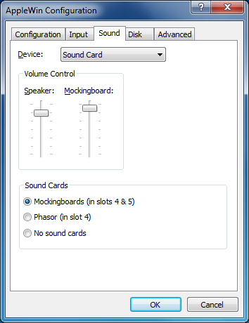

Sound Settings
Sound:
This option allows you to choose how sound is output for the
system. Your choices are:
- Disabled
- PC Speaker (direct)
- PC Speaker (translated)
- Sound Card (recommended)
Volume Control:
These slider controls allow you to control the sound
levels of the built-in Apple //e speaker and/or an optional
Mockingboard
or Phasor speaker.
Mockingboard/Phasor Control:
These options allow you to either enable a pair of Mockingboard sound
cards in slots 4 and
5, or enable a Phasor sound card in slot 4, or simply disable any
external
sound card for the emulated system.